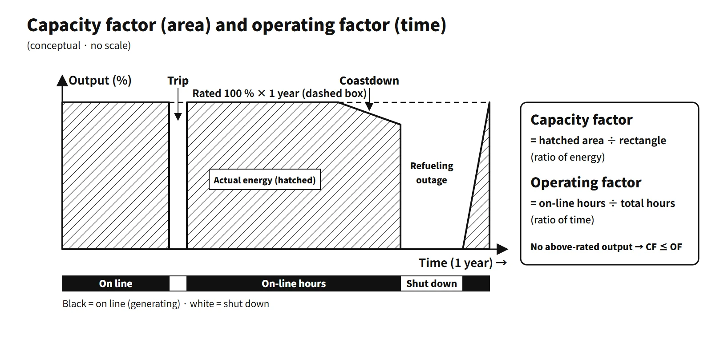

Operation, Regulation & Quality · C-OP-009
Capacity Factor and Operating Factor — A Ratio of Energy and a Ratio of Time
Why the same year can read 86.9 % or 89.0 %: which losses each indicator subtracts, and why an answer must name the indicator and its denominator first.
The capacity factor is the actual energy generated over a period divided by the energy that would have been generated at rated output for the whole period; the operating factor (time-based availability) is the share of the period's clock hours during which the generator was connected to the grid and generating. The capacity factor is a ratio of energy; the operating factor is a ratio of time.
- Capacity factor = energy generated (MWh) / [rated output (MW) × period (h)] × 100 %
- Operating factor = generating hours (h) / clock hours in the period (h) × 100 %
Principle and mechanism
The international indicator set
IAEA PRIS and WANO take the reference energy generation REG (energy at rated output for the whole period) as the denominator and split the losses by cause.
| Indicator | Equation | Losses subtracted |
|---|---|---|
| Capacity factor (PRIS name: load factor) | EG/REG | All losses + demand reductions |
| Energy availability factor EAF | (REG − PEL − UEL − XEL)/REG | Planned, unplanned, external |
| Unit capability factor UCF | (REG − PEL − UEL)/REG | Losses within management control |
| Unplanned capability loss factor UCLF | UEL/REG | — |
| Forced loss rate FLR | FEL/(REG − PEL − OEL) | — |
| Operating factor (PRIS OF) | Hours on line / clock hours | Time only |
PEL is the energy lost to shutdowns and power reductions planned at least four weeks in advance; UEL is the loss within management control from unplanned shutdowns, outage extensions and power reductions; XEL is the loss from reduced availability due to factors outside management control. IAEA PRIS coding also classifies end-of-cycle coastdown as XEL. FEL is the forced-outage loss and OEL the loss from unplanned extension of planned outages. Load following — lowering output on demand or dispatch instructions while the unit is available — is not an availability loss, so it lowers only the capacity factor.
Why they differ
Without operation above rating, capacity factor ≤ operating factor and capacity factor ≤ EAF ≤ UCF. Even while connected to the grid, the unit delivers less than rated energy because of the items below. The order between availability and operating factor is not fixed: if there is reserve shutdown (available but not dispatched), availability can be larger.
- Startup and power ascension after maintenance
- End-of-cycle coastdown: as burnup reduces the reactivity margin, rated power can no longer be held and output falls gradually
- Load following and output limits requested by the grid
- Power reductions due to equipment faults
Conversely, the capacity factor can exceed the operating factor when net output rises above rating in winter with cold cooling water, or when the rating and installed-capacity bases differ. In South Korea in 2022 the operating factor was 81.1 % and the capacity factor 81.6 %.
Worked example (assumed)
Assume an APR1400-class unit with net output 1,400 MWe over one year (REG = 365 rated days).
![Teaching example of one year of output for a 1,400 MWe unit: output in percent of rating against days 0 to 365 with a 10-day dispatch cut to 80 %, a trip of 5 days plus 2 days of restart at 50 %, a 4-day dispatch limit to 75 %, a 40-day coastdown averaging 94 %, a 35-day refueling outage and a 3-day ramp-up; a loss waterfall in rated days from REG 365.0 minus planned 36.5, unplanned 6.0, external 2.4 and dispatch 3.0 to generation 317.1, marking UCF 88.4 %, EAF 87.7 % and capacity factor 86.9 %; and a panel listing operating factor 89.0 %, UCF 88.4 %, EAF 87.7 %, capacity factor 86.9 %, UCLF 1.64 % and FLR 1.83 %](../../assets/images/concepts/c-op-009-capacity-operating-factor/fig1-annual-power-losses.webp)
| Event | Duration and output | Loss (rated days) | Classification |
|---|---|---|---|
| Refueling and planned outage | 35 days, 0 % | 35.0 | PEL |
| Power ascension after the outage | 3 days, average 50 % | 1.5 | PEL |
| Unplanned trip + restart | 5 days at 0 % + 2 days at 50 % | 6.0 | UEL (forced) |
| End-of-cycle coastdown | 40 days, average 94 % | 2.4 | XEL (PRIS) |
| Output reduced on dispatch instruction | 10 days at 80 % + 4 days at 75 % | 3.0 | Not an availability loss |
- Energy generated EG = 365 − 36.5 − 6.0 − 2.4 − 3.0 = 317.1 rated days ≈ 10.65 TWh
- Capacity factor = 317.1/365 = 86.9 %
- EAF = 320.1/365 = 87.7 %, UCF = 322.5/365 = 88.4 %
- Operating factor (hours on line) = (365 − 35 − 5)/365 = 89.0 %
- UCLF = 6.0/365 = 1.64 %, FLR = 6.0/(365 − 36.5) = 1.83 % (all UEL forced, no outage extension), time-based forced outage rate FOR = 5/(5 + 325) = 1.52 %
The same year gives indicators ranging from 86.9 to 89.0 %. Under a scheme that counts coastdown as a planned loss, UCF becomes 87.7 %. In an answer, first state which indicator and which denominator you are using.
What it means in a plant
Operating cycle and outage length
Considering outages only, the long-term operating factor is approximately 1 − D/(30.44T) (T cycle length in months, D outage days). An 18-month cycle with a 40-day outage gives 92.7 %; a 12-month cycle with 30 days gives 91.8 %. South Korean OPR1000 and APR1400 units run on about 18-month cycles, and planned outages generally last 30–60 days. Periodic inspections under the Nuclear Safety Act are also mainly done during these outages. In the US the average refueling outage was about 34 days (as of end of July 2024, EIA), and capacity factors have been about 90 % or more since the 2010s.
South Korean record
![Bar chart of South Korean nuclear capacity factors: 85.3 % in 2015, 79.7, 71.2, 65.9 in 2018 (highlighted, 2,917 unit-days of inspection outages), 70.6, 75.3, 74.5, 81.6 in 2022, 81.8, 83.8 and 84.6 in 2025, with a hatched 2026 target of 89.0 and operating-factor diamonds for 2018 (66.5), 2022 (81.1) and 2023 (82.1); a line chart of model nuclear LCOE versus capacity factor from 60 to 100 %, LCOE about 43.98 times 0.85 divided by CF plus 9.33, marking 66.1 at 65.9 %, 53.5 at 84.6 % and 48.7 at 95 %; and a photo of a refueling outage](../../assets/images/concepts/c-op-009-capacity-operating-factor/fig2-fleet-cf-lcoe.webp)
According to KHNP announcements, the capacity factor of South Korean nuclear plants was 85.3 % in 2015, 65.9 % in 2018 (with more safety-inspection outages, 2,917 shutdown days summed over all units), 81.6 % in 2022, 81.8 % in 2023, 83.8 % in 2024 and 84.6 % in 2025. The 2026 target is 89 %. Press reports say output limits on nuclear units for grid reasons became more frequent in the light-load spring season of 2025. When such dispatch reductions increase, the capacity factor falls even though availability is unchanged.
Link to economics
Nuclear power has a large fixed-cost share, so the fixed part of the unit cost is inversely proportional to the capacity factor. In the model, LCOE is 62.7 at 70 %, 53.3 at 85 % and 48.7 USD/MWh at 95 %. Raising the capacity factor by 1 percentage point from 85 % lowers it by about 0.5 USD/MWh (about 1 %). This is a sensitivity with fixed cost inputs, not the actual annual cost in South Korea.
How to improve it
- Reduce planned losses: longer cycles, critical-path management of outages, more on-line maintenance and on-line inspection (within what the Technical Specifications allow)
- Reduce unplanned losses: better reliability of trip-prone equipment (feedwater, turbine, electrical systems), condition-based maintenance, human-error prevention, the Maintenance Rule
- Output side: power uprates, optimized end-of-cycle coastdown, removing transmission constraints
- Safety comes first: shortening outages does not mean skipping necessary inspections.
Regulatory basis
- Capacity and operating factors are not safety regulatory requirements but operational performance indicators. They are defined by the IAEA PRIS performance indicators and the WANO Performance Indicators (UCF, UCLF, FLR).
- Regulators monitor the frequency of unplanned scrams as a safety performance indicator (NRC ROP "unplanned scrams per 7,000 critical hours", KINS safety performance indicators). Unplanned trips are reported under the Korean NSSC Notice on reporting and disclosure of incidents and failures at nuclear facilities.
- Compared with when the question was set: the definitions are the same as in 2008. South Korean results are published through the KHNP open operation information service and the public data portal (unit-by-unit generation and capacity factor, updated 2026.9).
Easily confused pairs
| Capacity factor | Operating factor | |
|---|---|---|
| Dimension | Ratio of energy | Ratio of time |
| Numerator | Actual energy generated | Generating hours |
| Denominator | Rating × clock hours | Clock hours |
| Lowered by | Shutdowns + reductions, power ascension, derated operation | Shutdowns only |
| Use | Economics, energy output | Equipment reliability |
Because UCF counts only losses within management control, it is used to compare plant operating performance; the capacity factor is used for energy sales and economics.
Key points at a glance
[10-point model answer] Definitions of capacity factor and operating factor, and how to improve them
- Capacity factor: actual energy generated / (rated output × hours in the period) × 100 % — energy-based.
- Operating factor: generating (on-line) hours / clock hours in the period × 100 % — time-based.
- Relation: without output above rating, capacity factor ≤ operating factor; the gap comes from power ascension, end-of-cycle coastdown, load following and derated operation.
- International indicators: UCF = (REG − PEL − UEL)/REG; EAF also subtracts external losses (XEL).
- What lowers them: planned outages (refueling), unplanned trips, outage extensions, grid constraints.
- Improvement: longer cycles, optimized outage schedules, equipment reliability and predictive maintenance, human-error prevention, power uprates.
- Meaning: with nuclear's large fixed-cost share, capacity factor +1 percentage point → unit cost about −1 % (at 85 %).
- South Korea: 2025 capacity factor 84.6 % (KHNP); 2026 target 89 %.

This is a model answer, not an official solution. It reflects the criteria current as of 2026.
Worked exam calculations
- 2022 exam, session 2, Q3: capacity factor = 355,000/(1,000 × 365) = 97.3 %, operating factor = (365 − 7 − 23)/365 = 91.8 %. A check shows the maximum energy from 335 days at rated power is 335,000 MWd, so the average output while operating would have to be 106 % of rating. Answer by the definitions and note this inconsistency in one line.
- 2025 exam, session 4, Q5: capacity factor = 450,000/(1,350 × 365) = 91.3 %, operating factor = 330/365 = 90.4 %. If the unit "ran at rated power while operating," energy would be 445,500 MWd and capacity factor = operating factor = 90.4 %. That differs from the given energy by about 3.3 rated days, so it is safest to give both values.
Exam relevance
Capacity and operating factors have appeared four times in the Korean Professional Engineer (Nuclear Power) exam: 2008 exam, session 1, Q12 (operating factor and capacity factor); 2022 exam, session 2, Q3 (calculating a plant's capacity and operating factors); 2023 exam, session 1, Q11 (definitions and ways to improve them); and 2025 exam, session 4, Q5 (calculating capacity and operating factors). Questions are either short definitions with improvement measures or calculations from energy generated and outage days. Keep the full clock hours as the denominator of the capacity factor, use MWe (not MWt) in MWd, and check whether the given energy is consistent with the operating days — both calculation questions contain such an inconsistency.